Sums, products, limits and extrapolation¶
The functions listed here permit approximation of infinite sums, products, and other sequence limits. Use mpmath.fsum() and mpmath.fprod() for summation and multiplication of finite sequences.
Summation (nsum, sumem)¶
- mpmath.nsum(ctx, f, *intervals, **options)¶
Computes the sum
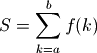
where
 = interval, and where 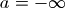 and/or
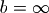 are allowed, or more generally
= interval, and where 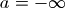 and/or
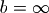 are allowed, or more generally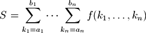
if multiple intervals are given.
Two examples of infinite series that can be summed by nsum(), where the first converges rapidly and the second converges slowly, are:
>>> from mpmath import * >>> mp.dps = 15; mp.pretty = True >>> nsum(lambda n: 1/fac(n), [0, inf]) 2.71828182845905 >>> nsum(lambda n: 1/n**2, [1, inf]) 1.64493406684823
When appropriate, nsum() applies convergence acceleration to accurately estimate the sums of slowly convergent series. If the series is finite, nsum() currently does not attempt to perform any extrapolation, and simply calls fsum().
Multidimensional infinite series are reduced to a single-dimensional series over expanding hypercubes; if both infinite and finite dimensions are present, the finite ranges are moved innermost. For more advanced control over the summation order, use nested calls to nsum(), or manually rewrite the sum as a single-dimensional series.
Options
- tol
- Desired maximum final error. Defaults roughly to the epsilon of the working precision.
- method
- Which summation algorithm to use (described below). Default: 'richardson+shanks'.
- maxterms
- Cancel after at most this many terms. Default: 10*dps.
- steps
- An iterable giving the number of terms to add between each extrapolation attempt. The default sequence is [10, 20, 30, 40, ...]. For example, if you know that approximately 100 terms will be required, efficiency might be improved by setting this to [100, 10]. Then the first extrapolation will be performed after 100 terms, the second after 110, etc.
- verbose
- Print details about progress.
- ignore
- If enabled, any term that raises ArithmeticError or ValueError (e.g. through division by zero) is replaced by a zero. This is convenient for lattice sums with a singular term near the origin.
Methods
Unfortunately, an algorithm that can efficiently sum any infinite series does not exist. nsum() implements several different algorithms that each work well in different cases. The method keyword argument selects a method.
The default method is 'r+s', i.e. both Richardson extrapolation and Shanks transformation is attempted. A slower method that handles more cases is 'r+s+e'. For very high precision summation, or if the summation needs to be fast (for example if multiple sums need to be evaluated), it is a good idea to investigate which one method works best and only use that.
- 'richardson' / 'r':
- Uses Richardson extrapolation. Provides useful extrapolation
when 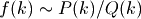 or when 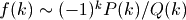
for polynomials
 and
and  . See richardson() for
additional information.
. See richardson() for
additional information. - 'shanks' / 's':
- Uses Shanks transformation. Typically provides useful extrapolation when 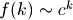 or when successive terms alternate signs. Is able to sum some divergent series. See shanks() for additional information.
- 'euler-maclaurin' / 'e':
- Uses the Euler-Maclaurin summation formula to approximate
the remainder sum by an integral. This requires high-order
numerical derivatives and numerical integration. The advantage
of this algorithm is that it works regardless of the
decay rate of
 , as long as is sufficiently smooth.
See sumem() for additional information.
, as long as is sufficiently smooth.
See sumem() for additional information. - 'direct' / 'd':
- Does not perform any extrapolation. This can be used (and should only be used for) rapidly convergent series. The summation automatically stops when the terms decrease below the target tolerance.
Basic examples
A finite sum:
>>> nsum(lambda k: 1/k, [1, 6]) 2.45
Summation of a series going to negative infinity and a doubly infinite series:
>>> nsum(lambda k: 1/k**2, [-inf, -1]) 1.64493406684823 >>> nsum(lambda k: 1/(1+k**2), [-inf, inf]) 3.15334809493716
nsum() handles sums of complex numbers:
>>> nsum(lambda k: (0.5+0.25j)**k, [0, inf]) (1.6 + 0.8j)
The following sum converges very rapidly, so it is most efficient to sum it by disabling convergence acceleration:
>>> mp.dps = 1000 >>> a = nsum(lambda k: -(-1)**k * k**2 / fac(2*k), [1, inf], ... method='direct') >>> b = (cos(1)+sin(1))/4 >>> abs(a-b) < mpf('1e-998') True
Examples with Richardson extrapolation
Richardson extrapolation works well for sums over rational functions, as well as their alternating counterparts:
>>> mp.dps = 50 >>> nsum(lambda k: 1 / k**3, [1, inf], ... method='richardson') 1.2020569031595942853997381615114499907649862923405 >>> zeta(3) 1.2020569031595942853997381615114499907649862923405 >>> nsum(lambda n: (n + 3)/(n**3 + n**2), [1, inf], ... method='richardson') 2.9348022005446793094172454999380755676568497036204 >>> pi**2/2-2 2.9348022005446793094172454999380755676568497036204 >>> nsum(lambda k: (-1)**k / k**3, [1, inf], ... method='richardson') -0.90154267736969571404980362113358749307373971925537 >>> -3*zeta(3)/4 -0.90154267736969571404980362113358749307373971925538
Examples with Shanks transformation
The Shanks transformation works well for geometric series and typically provides excellent acceleration for Taylor series near the border of their disk of convergence. Here we apply it to a series for 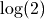, which can be seen as the Taylor series for 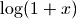 with
 :
:>>> nsum(lambda k: -(-1)**k/k, [1, inf], ... method='shanks') 0.69314718055994530941723212145817656807550013436025 >>> log(2) 0.69314718055994530941723212145817656807550013436025
Here we apply it to a slowly convergent geometric series:
>>> nsum(lambda k: mpf('0.995')**k, [0, inf], ... method='shanks') 200.0
Finally, Shanks’ method works very well for alternating series where 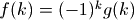, and often does so regardless of the exact decay rate of 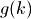:
>>> mp.dps = 15 >>> nsum(lambda k: (-1)**(k+1) / k**1.5, [1, inf], ... method='shanks') 0.765147024625408 >>> (2-sqrt(2))*zeta(1.5)/2 0.765147024625408
The following slowly convergent alternating series has no known closed-form value. Evaluating the sum a second time at higher precision indicates that the value is probably correct:
>>> nsum(lambda k: (-1)**k / log(k), [2, inf], ... method='shanks') 0.924299897222939 >>> mp.dps = 30 >>> nsum(lambda k: (-1)**k / log(k), [2, inf], ... method='shanks') 0.92429989722293885595957018136
Examples with Euler-Maclaurin summation
The sum in the following example has the wrong rate of convergence for either Richardson or Shanks to be effective.
>>> f = lambda k: log(k)/k**2.5 >>> mp.dps = 15 >>> nsum(f, [1, inf], method='euler-maclaurin') 0.38734195032621 >>> -diff(zeta, 2.5) 0.38734195032621
Increasing steps improves speed at higher precision:
>>> mp.dps = 50 >>> nsum(f, [1, inf], method='euler-maclaurin', steps=[250]) 0.38734195032620997271199237593105101319948228874688 >>> -diff(zeta, 2.5) 0.38734195032620997271199237593105101319948228874688
Divergent series
The Shanks transformation is able to sum some divergent series. In particular, it is often able to sum Taylor series beyond their radius of convergence (this is due to a relation between the Shanks transformation and Pade approximations; see pade() for an alternative way to evaluate divergent Taylor series).
Here we apply it to far outside the region of convergence:
>>> mp.dps = 50 >>> nsum(lambda k: -(-9)**k/k, [1, inf], ... method='shanks') 2.3025850929940456840179914546843642076011014886288 >>> log(10) 2.3025850929940456840179914546843642076011014886288
A particular type of divergent series that can be summed using the Shanks transformation is geometric series. The result is the same as using the closed-form formula for an infinite geometric series:
>>> mp.dps = 15 >>> for n in range(-8, 8): ... if n == 1: ... continue ... print mpf(n), mpf(1)/(1-n), nsum(lambda k: n**k, [0, inf], ... method='shanks') ... -8.0 0.111111111111111 0.111111111111111 -7.0 0.125 0.125 -6.0 0.142857142857143 0.142857142857143 -5.0 0.166666666666667 0.166666666666667 -4.0 0.2 0.2 -3.0 0.25 0.25 -2.0 0.333333333333333 0.333333333333333 -1.0 0.5 0.5 0.0 1.0 1.0 2.0 -1.0 -1.0 3.0 -0.5 -0.5 4.0 -0.333333333333333 -0.333333333333333 5.0 -0.25 -0.25 6.0 -0.2 -0.2 7.0 -0.166666666666667 -0.166666666666667
Multidimensional sums
Any combination of finite and infinite ranges is allowed for the summation indices:
>>> mp.dps = 15 >>> nsum(lambda x,y: x+y, [2,3], [4,5]) 28.0 >>> nsum(lambda x,y: x/2**y, [1,3], [1,inf]) 6.0 >>> nsum(lambda x,y: y/2**x, [1,inf], [1,3]) 6.0 >>> nsum(lambda x,y,z: z/(2**x*2**y), [1,inf], [1,inf], [3,4]) 7.0 >>> nsum(lambda x,y,z: y/(2**x*2**z), [1,inf], [3,4], [1,inf]) 7.0 >>> nsum(lambda x,y,z: x/(2**z*2**y), [3,4], [1,inf], [1,inf]) 7.0
Some nice examples of double series with analytic solutions or reductions to single-dimensional series (see [1]):
>>> nsum(lambda m, n: 1/2**(m*n), [1,inf], [1,inf]) 1.60669515241529 >>> nsum(lambda n: 1/(2**n-1), [1,inf]) 1.60669515241529 >>> nsum(lambda i,j: (-1)**(i+j)/(i**2+j**2), [1,inf], [1,inf]) 0.278070510848213 >>> pi*(pi-3*ln2)/12 0.278070510848213 >>> nsum(lambda i,j: (-1)**(i+j)/(i+j)**2, [1,inf], [1,inf]) 0.129319852864168 >>> altzeta(2) - altzeta(1) 0.129319852864168 >>> nsum(lambda i,j: (-1)**(i+j)/(i+j)**3, [1,inf], [1,inf]) 0.0790756439455825 >>> altzeta(3) - altzeta(2) 0.0790756439455825 >>> nsum(lambda m,n: m**2*n/(3**m*(n*3**m+m*3**n)), ... [1,inf], [1,inf]) 0.28125 >>> mpf(9)/32 0.28125 >>> nsum(lambda i,j: fac(i-1)*fac(j-1)/fac(i+j), ... [1,inf], [1,inf], workprec=400) 1.64493406684823 >>> zeta(2) 1.64493406684823
A hard example of a multidimensional sum is the Madelung constant in three dimensions (see [2]). The defining sum converges very slowly and only conditionally, so nsum() is lucky to obtain an accurate value through convergence acceleration. The second evaluation below uses a much more efficient, rapidly convergent 2D sum:
>>> nsum(lambda x,y,z: (-1)**(x+y+z)/(x*x+y*y+z*z)**0.5, ... [-inf,inf], [-inf,inf], [-inf,inf], ignore=True) -1.74756459463318 >>> nsum(lambda x,y: -12*pi*sech(0.5*pi * \ ... sqrt((2*x+1)**2+(2*y+1)**2))**2, [0,inf], [0,inf]) -1.74756459463318
Another example of a lattice sum in 2D:
>>> nsum(lambda x,y: (-1)**(x+y) / (x**2+y**2), [-inf,inf], ... [-inf,inf], ignore=True) -2.1775860903036 >>> -pi*ln2 -2.1775860903036
An example of an Eisenstein series:
>>> nsum(lambda m,n: (m+n*1j)**(-4), [-inf,inf], [-inf,inf], ... ignore=True) (3.1512120021539 + 0.0j)
References
- mpmath.sumem(ctx, f, interval, tol=None, reject=10, integral=None, adiffs=None, bdiffs=None, verbose=False, error=False)¶
Uses the Euler-Maclaurin formula to compute an approximation accurate to within tol (which defaults to the present epsilon) of the sum

where 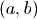 are given by interval and
 or
or  may be
infinite. The approximation is
may be
infinite. The approximation is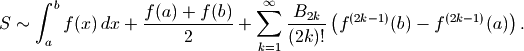
The last sum in the Euler-Maclaurin formula is not generally convergent (a notable exception is if
is a polynomial, in
which case Euler-Maclaurin actually gives an exact result).The summation is stopped as soon as the quotient between two consecutive terms falls below reject. That is, by default (reject = 10), the summation is continued as long as each term adds at least one decimal.
Although not convergent, convergence to a given tolerance can often be “forced” if by summing up to 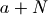 and then applying the Euler-Maclaurin formula to the sum over the range 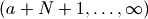. This procedure is implemented by nsum().
By default numerical quadrature and differentiation is used. If the symbolic values of the integral and endpoint derivatives are known, it is more efficient to pass the value of the integral explicitly as integral and the derivatives explicitly as adiffs and bdiffs. The derivatives should be given as iterables that yield 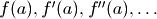 (and the equivalent for
).Examples
Summation of an infinite series, with automatic and symbolic integral and derivative values (the second should be much faster):
>>> from mpmath import * >>> mp.dps = 50; mp.pretty = True >>> sumem(lambda n: 1/n**2, [32, inf]) 0.03174336652030209012658168043874142714132886413417 >>> I = mpf(1)/32 >>> D = adiffs=((-1)**n*fac(n+1)*32**(-2-n) for n in xrange(999)) >>> sumem(lambda n: 1/n**2, [32, inf], integral=I, adiffs=D) 0.03174336652030209012658168043874142714132886413417
An exact evaluation of a finite polynomial sum:
>>> sumem(lambda n: n**5-12*n**2+3*n, [-100000, 200000]) 10500155000624963999742499550000.0 >>> print sum(n**5-12*n**2+3*n for n in xrange(-100000, 200001)) 10500155000624963999742499550000
Products (nprod)¶
- mpmath.nprod(ctx, f, interval, nsum=False, **kwargs)¶
Computes the product

where
= interval, and where and/or
are allowed.By default, nprod() uses the same extrapolation methods as nsum(), except applied to the partial products rather than partial sums, and the same keyword options as for nsum() are supported. If nsum=True, the product is instead computed via nsum() as
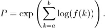
This is slower, but can sometimes yield better results. It is also required (and used automatically) when Euler-Maclaurin summation is requested.
Examples
A simple finite product:
>>> from mpmath import * >>> mp.dps = 25; mp.pretty = True >>> nprod(lambda k: k, [1, 4]) 24.0
A large number of infinite products have known exact values, and can therefore be used as a reference. Most of the following examples are taken from MathWorld [1].
A few infinite products with simple values are:
>>> 2*nprod(lambda k: (4*k**2)/(4*k**2-1), [1, inf]) 3.141592653589793238462643 >>> nprod(lambda k: (1+1/k)**2/(1+2/k), [1, inf]) 2.0 >>> nprod(lambda k: (k**3-1)/(k**3+1), [2, inf]) 0.6666666666666666666666667 >>> nprod(lambda k: (1-1/k**2), [2, inf]) 0.5
Next, several more infinite products with more complicated values:
>>> nprod(lambda k: exp(1/k**2), [1, inf]); exp(pi**2/6) 5.180668317897115748416626 5.180668317897115748416626 >>> nprod(lambda k: (k**2-1)/(k**2+1), [2, inf]); pi*csch(pi) 0.2720290549821331629502366 0.2720290549821331629502366 >>> nprod(lambda k: (k**4-1)/(k**4+1), [2, inf]) 0.8480540493529003921296502 >>> pi*sinh(pi)/(cosh(sqrt(2)*pi)-cos(sqrt(2)*pi)) 0.8480540493529003921296502 >>> nprod(lambda k: (1+1/k+1/k**2)**2/(1+2/k+3/k**2), [1, inf]) 1.848936182858244485224927 >>> 3*sqrt(2)*cosh(pi*sqrt(3)/2)**2*csch(pi*sqrt(2))/pi 1.848936182858244485224927 >>> nprod(lambda k: (1-1/k**4), [2, inf]); sinh(pi)/(4*pi) 0.9190194775937444301739244 0.9190194775937444301739244 >>> nprod(lambda k: (1-1/k**6), [2, inf]) 0.9826842777421925183244759 >>> (1+cosh(pi*sqrt(3)))/(12*pi**2) 0.9826842777421925183244759 >>> nprod(lambda k: (1+1/k**2), [2, inf]); sinh(pi)/(2*pi) 1.838038955187488860347849 1.838038955187488860347849 >>> nprod(lambda n: (1+1/n)**n * exp(1/(2*n)-1), [1, inf]) 1.447255926890365298959138 >>> exp(1+euler/2)/sqrt(2*pi) 1.447255926890365298959138
The following two products are equivalent and can be evaluated in terms of a Jacobi theta function. Pi can be replaced by any value (as long as convergence is preserved):
>>> nprod(lambda k: (1-pi**-k)/(1+pi**-k), [1, inf]) 0.3838451207481672404778686 >>> nprod(lambda k: tanh(k*log(pi)/2), [1, inf]) 0.3838451207481672404778686 >>> jtheta(4,0,1/pi) 0.3838451207481672404778686
This product does not have a known closed form value:
>>> nprod(lambda k: (1-1/2**k), [1, inf]) 0.2887880950866024212788997
A product taken from
 :
:>>> nprod(lambda k: 1-k**(-3), [-inf,-2]) 0.8093965973662901095786805 >>> cosh(pi*sqrt(3)/2)/(3*pi) 0.8093965973662901095786805
A doubly infinite product:
>>> nprod(lambda k: exp(1/(1+k**2)), [-inf, inf]) 23.41432688231864337420035 >>> exp(pi/tanh(pi)) 23.41432688231864337420035
A product requiring the use of Euler-Maclaurin summation to compute an accurate value:
>>> nprod(lambda k: (1-1/k**2.5), [2, inf], method='e') 0.696155111336231052898125
References
Limits (limit)¶
- mpmath.limit(ctx, f, x, direction=1, exp=False, **kwargs)¶
Computes an estimate of the limit
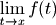
where
 may be finite or infinite.
may be finite or infinite.For finite
, limit() evaluates 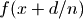 for
consecutive integer values of  , where the approach direction
, where the approach direction
 may be specified using the direction keyword argument.
For infinite , limit() evaluates values of
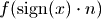.
may be specified using the direction keyword argument.
For infinite , limit() evaluates values of
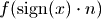.If the approach to the limit is not sufficiently fast to give an accurate estimate directly, limit() attempts to find the limit using Richardson extrapolation or the Shanks transformation. You can select between these methods using the method keyword (see documentation of nsum() for more information).
Options
The following options are available with essentially the same meaning as for nsum(): tol, method, maxterms, steps, verbose.
If the option exp=True is set,
will be
sampled at exponentially spaced points 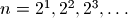
instead of the linearly spaced points 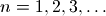.
This can sometimes improve the rate of convergence so that
limit() may return a more accurate answer (and faster).
However, do note that this can only be used if
supports fast and accurate evaluation for arguments that
are extremely close to the limit point (or if infinite,
very large arguments).Examples
A basic evaluation of a removable singularity:
>>> from mpmath import * >>> mp.dps = 30; mp.pretty = True >>> limit(lambda x: (x-sin(x))/x**3, 0) 0.166666666666666666666666666667
Computing the exponential function using its limit definition:
>>> limit(lambda n: (1+3/n)**n, inf) 20.0855369231876677409285296546 >>> exp(3) 20.0855369231876677409285296546
A limit for
 :
:>>> f = lambda n: 2**(4*n+1)*fac(n)**4/(2*n+1)/fac(2*n)**2 >>> limit(f, inf) 3.14159265358979323846264338328
Calculating the coefficient in Stirling’s formula:
>>> limit(lambda n: fac(n) / (sqrt(n)*(n/e)**n), inf) 2.50662827463100050241576528481 >>> sqrt(2*pi) 2.50662827463100050241576528481
Evaluating Euler’s constant
 using the limit representation
using the limit representation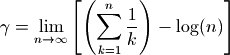
(which converges notoriously slowly):
>>> f = lambda n: sum([mpf(1)/k for k in range(1,n+1)]) - log(n) >>> limit(f, inf) 0.577215664901532860606512090082 >>> +euler 0.577215664901532860606512090082
With default settings, the following limit converges too slowly to be evaluated accurately. Changing to exponential sampling however gives a perfect result:
>>> f = lambda x: sqrt(x**3+x**2)/(sqrt(x**3)+x) >>> limit(f, inf) 0.992831158558330281129249686491 >>> limit(f, inf, exp=True) 1.0
Extrapolation (richardson, shanks)¶
The following functions provide a direct interface to extrapolation algorithms. nsum() and limit() essentially work by calling the following functions with an increasing number of terms until the extrapolated limit is accurate enough.
The following functions may be useful to call directly if the precise number of terms needed to achieve a desired accuracy is known in advance, or if one wishes to study the convergence properties of the algorithms.
- mpmath.richardson(ctx, seq)¶
Given a list seq of the first
 elements of a slowly convergent
infinite sequence, richardson() computes the -term
Richardson extrapolate for the limit.
elements of a slowly convergent
infinite sequence, richardson() computes the -term
Richardson extrapolate for the limit.richardson() returns 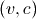 where 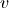 is the estimated limit and
 is the magnitude of the largest weight used during the
computation. The weight provides an estimate of the precision
lost to cancellation. Due to cancellation effects, the sequence must
be typically be computed at a much higher precision than the target
accuracy of the extrapolation.
is the magnitude of the largest weight used during the
computation. The weight provides an estimate of the precision
lost to cancellation. Due to cancellation effects, the sequence must
be typically be computed at a much higher precision than the target
accuracy of the extrapolation.Applicability and issues
The
-step Richardson extrapolation algorithm used by
richardson() is described in [1].Richardson extrapolation only works for a specific type of sequence, namely one converging like partial sums of 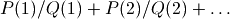 where
and are polynomials.
When the sequence does not convergence at such a rate
richardson() generally produces garbage.Richardson extrapolation has the advantage of being fast: the
-term
extrapolate requires only 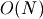 arithmetic operations, and usually
produces an estimate that is accurate to digits. Contrast with
the Shanks transformation (see shanks()), which requires
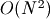 operations.richardson() is unable to produce an estimate for the approximation error. One way to estimate the error is to perform two extrapolations with slightly different
and comparing the
results.Richardson extrapolation does not work for oscillating sequences. As a simple workaround, richardson() detects if the last three elements do not differ monotonically, and in that case applies extrapolation only to the even-index elements.
Example
Applying Richardson extrapolation to the Leibniz series for
:>>> from mpmath import * >>> mp.dps = 30; mp.pretty = True >>> S = [4*sum(mpf(-1)**n/(2*n+1) for n in range(m)) ... for m in range(1,30)] >>> v, c = richardson(S[:10]) >>> v 3.2126984126984126984126984127 >>> nprint([v-pi, c]) [0.0711058, 2.0] >>> v, c = richardson(S[:30]) >>> v 3.14159265468624052829954206226 >>> nprint([v-pi, c]) [1.09645e-9, 20833.3]
References
- [BenderOrszag] pp. 375-376
- mpmath.shanks(ctx, seq, table=None, randomized=False)¶
Given a list seq of the first
elements of a slowly
convergent infinite sequence 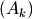, shanks() computes the iterated
Shanks transformation 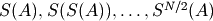. The Shanks
transformation often provides strong convergence acceleration,
especially if the sequence is oscillating.The iterated Shanks transformation is computed using the Wynn epsilon algorithm (see [1]). shanks() returns the full epsilon table generated by Wynn’s algorithm, which can be read off as follows:
- The table is a list of lists forming a lower triangular matrix, where higher row and column indices correspond to more accurate values.
- The columns with even index hold dummy entries (required for the computation) and the columns with odd index hold the actual extrapolates.
- The last element in the last row is typically the most accurate estimate of the limit.
- The difference to the third last element in the last row provides an estimate of the approximation error.
- The magnitude of the second last element provides an estimate of the numerical accuracy lost to cancellation.
For convenience, so the extrapolation is stopped at an odd index so that shanks(seq)[-1][-1] always gives an estimate of the limit.
Optionally, an existing table can be passed to shanks(). This can be used to efficiently extend a previous computation after new elements have been appended to the sequence. The table will then be updated in-place.
The Shanks transformation
The Shanks transformation is defined as follows (see [2]): given the input sequence 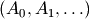, the transformed sequence is given by
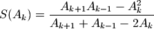
The Shanks transformation gives the exact limit 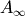 in a single step if 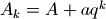. Note in particular that it extrapolates the exact sum of a geometric series in a single step.
Applying the Shanks transformation once often improves convergence substantially for an arbitrary sequence, but the optimal effect is obtained by applying it iteratively: 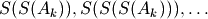.
Wynn’s epsilon algorithm provides an efficient way to generate the table of iterated Shanks transformations. It reduces the computation of each element to essentially a single division, at the cost of requiring dummy elements in the table. See [1] for details.
Precision issues
Due to cancellation effects, the sequence must be typically be computed at a much higher precision than the target accuracy of the extrapolation.
If the Shanks transformation converges to the exact limit (such as if the sequence is a geometric series), then a division by zero occurs. By default, shanks() handles this case by terminating the iteration and returning the table it has generated so far. With randomized=True, it will instead replace the zero by a pseudorandom number close to zero. (TODO: find a better solution to this problem.)
Examples
We illustrate by applying Shanks transformation to the Leibniz series for
:>>> from mpmath import * >>> mp.dps = 50 >>> S = [4*sum(mpf(-1)**n/(2*n+1) for n in range(m)) ... for m in range(1,30)] >>> >>> T = shanks(S[:7]) >>> for row in T: ... nprint(row) ... [-0.75] [1.25, 3.16667] [-1.75, 3.13333, -28.75] [2.25, 3.14524, 82.25, 3.14234] [-2.75, 3.13968, -177.75, 3.14139, -969.937] [3.25, 3.14271, 327.25, 3.14166, 3515.06, 3.14161]
The extrapolated accuracy is about 4 digits, and about 4 digits may have been lost due to cancellation:
>>> L = T[-1] >>> nprint([abs(L[-1] - pi), abs(L[-1] - L[-3]), abs(L[-2])]) [2.22532e-5, 4.78309e-5, 3515.06]
Now we extend the computation:
>>> T = shanks(S[:25], T) >>> L = T[-1] >>> nprint([abs(L[-1] - pi), abs(L[-1] - L[-3]), abs(L[-2])]) [3.75527e-19, 1.48478e-19, 2.96014e+17]
The value for pi is now accurate to 18 digits. About 18 digits may also have been lost to cancellation.
Here is an example with a geometric series, where the convergence is immediate (the sum is exactly 1):
>>> mp.dps = 15 >>> for row in shanks([0.5, 0.75, 0.875, 0.9375, 0.96875]): ... nprint(row) [4.0] [8.0, 1.0]
References
- [GravesMorris]
- [BenderOrszag] pp. 368-375